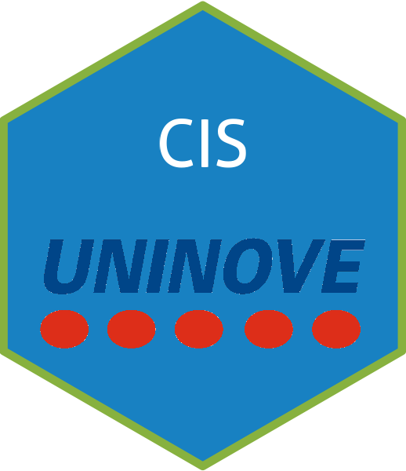

class: center, middle, inverse, title-slide # Literacia de Dados ### Jose Storopoli, PhD ### <img src="images/UNINOVE_PPGA.png" width="124" /> ### 08/02/2021 --- class: animated, fadeIn layout: true <!-- Global site tag (gtag.js) - Google Analytics --> <script async src="https://www.googletagmanager.com/gtag/js?id=UA-186284914-5"></script> <script> window.dataLayer = window.dataLayer || []; function gtag(){dataLayer.push(arguments);} gtag('js', new Date()); gtag('config', 'UA-186284914-5'); </script> --- <div> <style type="text/css">.xaringan-extra-logo { width: 110px; height: 55px; z-index: 0; background-image: url(https://raw.githubusercontent.com/storopoli/UNINOVE-xaringan-theme/master/resources/uninove.png); background-size: contain; background-repeat: no-repeat; position: absolute; top:1em;right:1em; } </style> <script>(function () { let tries = 0 function addLogo () { if (typeof slideshow === 'undefined') { tries += 1 if (tries < 10) { setTimeout(addLogo, 100) } } else { document.querySelectorAll('.remark-slide-content:not(.title-slide):not(.inverse):not(.hide_logo)') .forEach(function (slide) { const logo = document.createElement('a') logo.classList = 'xaringan-extra-logo' logo.href = 'https://www.uninove.br' slide.appendChild(logo) }) } } document.addEventListener('DOMContentLoaded', addLogo) })()</script> </div> # Literacia de Dados Definição da Wikipedia - https://pt.wikipedia.org/wiki/Alfabetização_de_dados --- # O que são Dados? --- # Como que a Ciência Avança? .pull-left[ ### Hierarquia de Evidências * RCT - Ensaio Clínico Randomizado * Estudo de Coorte * Estudo de Caso-controle ] .pull-right[ <div class="figure"> <img src="images/lancet-evidences.png" alt="Lancet, 2017" width="80%" /> <p class="caption">Lancet, 2017</p> </div> ] .footnote[Djulbegovic, B., & Guyatt, G. H. (2017). Progress in evidence-based medicine: a quarter century on. The Lancet, 390(10092), 415-423.] ??? Os **estudos de coorte** são um tipo específico de desenho de estudo observacional que apresenta um nível de evidência maior que os outros observacionais, mas menor nível de evidência que os estudos experimentais. Compara a experiência de um grupo exposto e outro não exposto ao longo do tempo, para a identificação dos efeitos da exposição na incidência do evento de interesse. --- ## Estatística .pull-left[ ### Descritiva <div id="htmlwidget-bcc569e9a5fb6f3f4fe2" style="width:100%;height:504px;" class="grViz html-widget"></div> <script type="application/json" data-for="htmlwidget-bcc569e9a5fb6f3f4fe2">{"x":{"diagram":"\n digraph estatistica_descritiva {\n graph [overlap = false,\n fontsize = 12,\n rankdir = LR]\n node [shape = oval,\n fontname = Helvetica]\n A [label = \"Dados\nObservados\"]\n node [shape = box,\n fontname = Helvetica]\n B [label = \"Média\"]; C [label = \"Mediana\"]; D [label = \"Moda\"]; E [label = \"Desvio\nPadrão\"]\n A -> {B C D E} [dir = forward,\n tailport = \"e\",\n headport = \"w\"]\n} \n","config":{"engine":"dot","options":null}},"evals":[],"jsHooks":[]}</script> ] .pull-right[ ### Inferencial <div id="htmlwidget-23dada22fc5642de2fc1" style="width:100%;height:504px;" class="grViz html-widget"></div> <script type="application/json" data-for="htmlwidget-23dada22fc5642de2fc1">{"x":{"diagram":"\n digraph estatistica_inferencial {\n forcelabels = true;\n graph [overlap = false,\n fontsize = 12,\n rankdir = TD]\n node [shape = oval,\n fontname = Helvetica]\n A [label = \"Processo de\nGeração de Dados\"]\n B [label = \"Dados\nObservados\"]\n A -> B [dir = forward,\n xlabel = \" Probabilidade \",\n tailport = \"e\",\n headport = \"e\"]\n B -> A [dir = backward,\n label = \" Inferência \",\n tailport = \"w\",\n headport = \"w\"]\n} \n","config":{"engine":"dot","options":null}},"evals":[],"jsHooks":[]}</script> ] --- # Machine Learning vs Estatística .pull-left[ ### Estatística <img src="index_files/figure-html/estatistica-plot-1.png" width="504" /> ] .pull-right[ ### Machine Learning <img src="index_files/figure-html/ml-plot-1.png" width="504" /> ] --- # Distribuições Normais e não-Normais .pull-left[ <img src="index_files/figure-html/dist-normal-1.png" width="504" /> ] .pull-right[ <img src="index_files/figure-html/dist-not-normal-1.png" width="504" /> ] --- # Pressupostos vs Realidade <img src="images/assumptions-vs-reality.jpeg" width="100%" /> .footnote[Figura de [Katherine Hoffman](https://www.khstats.com/blog/tmle/tutorial/). Reprodução Autorizada.] --- # Medidas de Centralidade - Média, Mediana e Moda --- # Medidas de Dispersão - Desvio Padrão --- # Medidas de Dispersão ### Percentil ### IQR --- # Como ler tabelas --- # Como ler gráficos --- # Hipótese Nula --- # `\(p\)`-valor .footnote[Figura da [Wikipedia](https://www.wikipedia.org/).] --- # Intervalo de Confiança --- # Créditos! Slides criado pelo pacote R [`xaringan`](https://github.com/yihui/xaringan). .pull-left[ <img src="images/Profile Pic.png" width="100%" style="display: block; margin: auto auto auto 0;" /> ] .pull-right[ [<i class="fab fa-linkedin "></i> @storopoli](https://www.linkedin.com/in/storopoli/) [<i class="fab fa-twitter "></i> @JoseStoropoli](https://www.twitter.com/JoseStoropoli) [<i class="fab fa-github "></i> @storopoli](http://github.com/storopoli) [<i class="fas fa-paper-plane "></i> josees@uni9.pro.br](mailto:josees@uni9.pro.br) ]